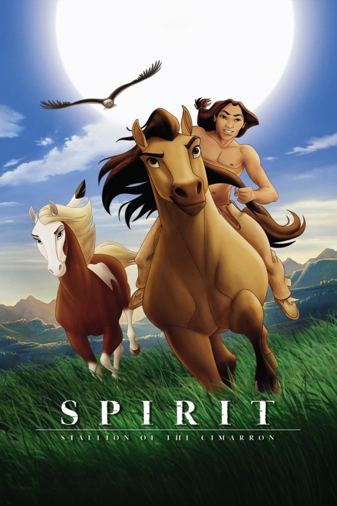
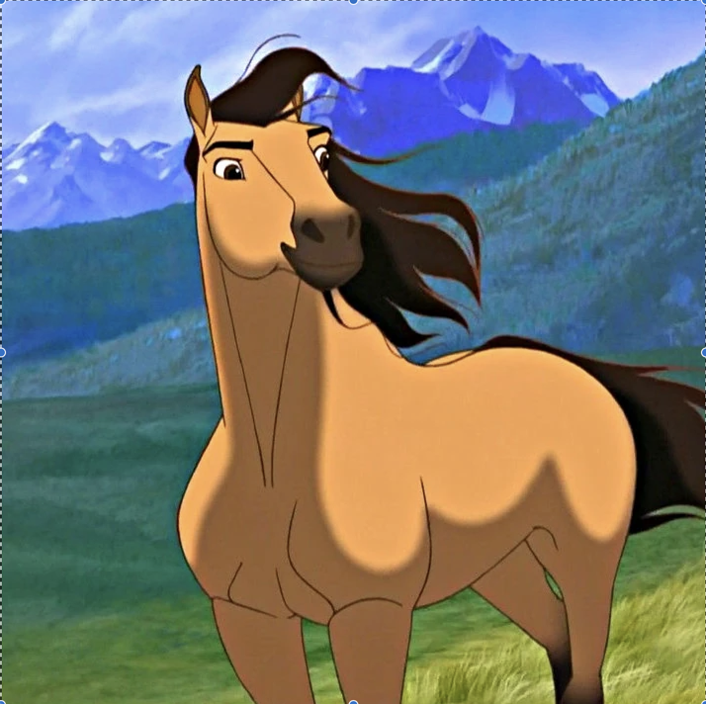
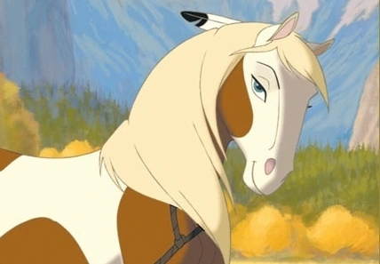
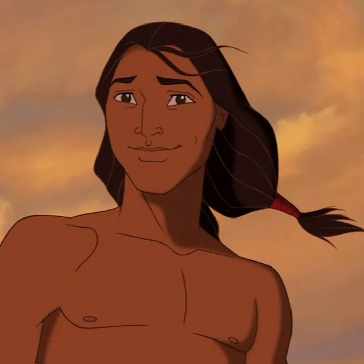
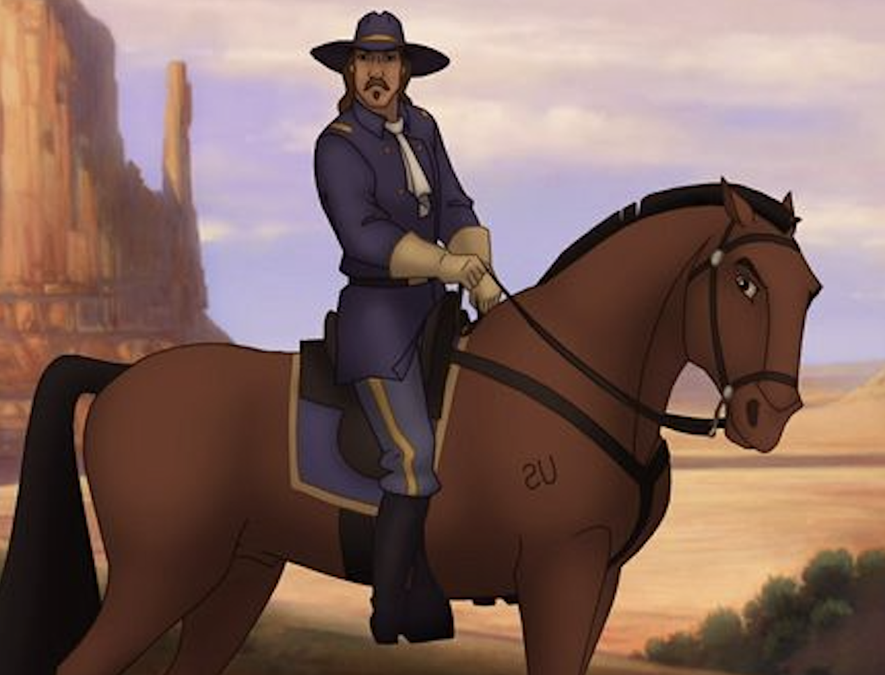

Spirit: Stallion of the Cimarron is a 2002 animated Western film directed by Kelly Asbury and Lorna Cook, written by John Fusco and produced by Mireille Soria and Jeffrey Katzenberg. Set in the Old West in the late 19th century, the film follows Spirit, a Kiger mustang stallion (voiced by Matt Damon as a narrator).
In late 1887 Spirit is born to a herd of wild horses; he grows into a stallion, and assumes the leadership of the herd. His curiosity pushes him towards humans, who attack him and hold him captive at a US cavalry fort. Here, the Colonel tries to tame Spirit and tries to kill him when he fails. Little Creek, a Lakota man also held at the fort, escapes, bringing Spirit with him.
Through the rest of the movie, Sprit, Little Creek and his horse Rain form a deep bond, regardless of Spirit's desire to remain free and wild. As the US cavalry continues to chase the Lakotas to steal their lands Spirit and Little Creek save each other's lives multiple times.
At the end, the US cavalry gives up on catching Spirit and Little Creek. The movie ends with an emotional goodbye between Little Creek and the horses, as both Spirit and Rain return to the wilderness.



